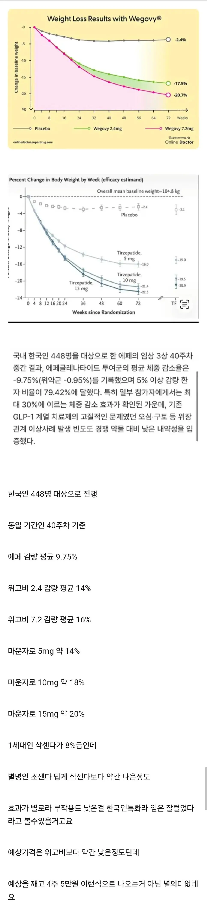

개병신같네 . 애초에 부작용이 안먹어서 생기는 것들인데, 저건 그냥 효과가 떨어지니까 부작용도 안생기는거아니야 ㅋㅋ 가격이라도 존나 싸야 쓸듯
성능 k삭센다 수준이면 조센다 라고 불러야겠는데 ㅋㅋㅋㅋㅋ
이미 살 뺀 사람들은 마운자로 위고비 위력 맛봤는데 가격이 압도적으로 안 싼 이상 누가 삼 ㅋㅋㅋ
조온나 싼거 아니고서야 경쟁력 진짜 하나도없다
싸게 나와야....
당뇨 임상 통과했나?
개드립올라오는거보면 뭐 한국인특화약이다 이런식으로 입털었다고 하는데, 진짜로 에페가 한국인특화약이라고 오피셜이나 공식석상, 배포용 언론자료에 언급한거 있음???
검색해보면 한국인 펜싱 에페만 뜨고 저런내용은없어서물어봄...
그냥 실험대상자가 그냥 죄다 한국사람들이었을 뿐인걸로 앎. 한국인 특화는 유튜브나 언론에서 떠들거나 커뮤에서 나왔을걸?
한미약품 공홈에 가면 첫페이지에 떡하니 틀어준다 “한국인 맞춤형 GLP1 최초 국산 비만약“이라고 그대로 적혀있음
정정고맙소... 내가 잘못알고 있었구나.
이왜진? 미쳤네
한미약품 혁신성장부문장 김나영 부사장은 “이번 에페 품목허가는 그동안 해외 수입 의약품에 의존해야 했던 치료 환경에서 한국인 특성에 맞춘 임상 근거를 기반으로 한 치료제를 안정적으로 공급할 수 있게 됐다는 점에서 큰 의미가 있다”며
땡큐 ㄱㅅㄱㅅ
가격이 문제겠네
최고용량으로 저정도면 15언더면 괜찮은거같음 마운자로 5mg이 35-36이니까
15언더는 쉽지않을것같다는게 지인피셜이던데 자기도 해당 개발부가 아니라서 정확하겐 모른데
진짜 싸야 팔릴듯.
가격싸게 10만원이하 나오면 개인적으론 경쟁력 매우좋을꺼임
위고비 마운자로 사용하다가 멈추고싶을떄
체중 유지용으로 아주 훌륭해지니깐
걍 마운자로 할거야
걍 위고비 나눠맞을듯 ㅋㅋㅋ
위고비, 마운자로랑 똑같은 값에 팔겠지 뭐
하나도 안팔릴듯 ㅋㅋ
신토불이랍시고 비쌀거같냐 왜
가격 존나 애매하게 나올거같음
10만원 이하 아니면 안산다 기술력 병신들
구라안치고 5만원정도 되면 고민할듯
넉넉잡아 12만원 까지도 나쁘지않게 봐줄순 있을듯..
5만원이면 딱 좋고
솔직히 10만원 이상이면 경쟁력 전혀 없을 것 같은데
찌라시로는 20만원 언저리에 니온다고 하니까 가망이 없다
안삼 꺼지셈 ㅈ도 1주1만원꼴아니면 안삼
비유 쥑이네 ㅋㅋㅋㅋㅋㅋㅋ 엑시노스
헬스하는사람들이 에페 어쩌구 쓰지않나 ?살잘빠지게하는거
그건 에페드린 염산염
ㄹㅇ 4주 5만원 이렇게나오면 한국인 특화 맞지. 요즘 뉴스보면 에페 밀어주려고 마운자로 죽이기 제대로 하더만
조센다는 떨이로 파는거 아니면 안삼 ㅋㅋ
일단 한국인 맞춤형이라는게 존나 웃김 ㅋㅋㅋ
혼혈이면 뭐 효과 절반떨어지고 외국인이면 거의 안듣고 그래?
어? 이거완전 우생...
4주 , 9만8천원 정도면 시장진입 가능할듯.
가격때문에 중단하거나 2주에 한번 맞는 사람도 있으니
난또 그 이번에 새로나온다는 레페 뭐시기인가 지방연소 어쩌구 그건줄알앗네
한국인 (안)맞춤형 다이어트 특효제!(보급형)
20만원 넘을듯 ㅋㅋ
에페가 이기는 법 = 근손실없음
부작용 음부의 혈류증가
삭센다 3개월 맞아봤는데 효과 존나없으...
달에 10만원 초반대면 맞을 의향이 잇다 20넘어가는 순간부터는..ㅋ
에페라길래 에페드린인줄알았네 ㅅㅂㅋㅋㅋㅋ